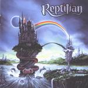

| Artist: | Reptilian |
| Title: | Castle Of Yesterday |
| Label: | Regain Records |
| Length(s): | 50 minutes |
| Year(s) of release: | 2001 |
| Month of review: | [10/2001] |
| 1) | Preludium - Oblivion | 5.32 |
| 2) | Castle Of Yesterday | 3.59 |
| 3) | Veins Of Hell | 5.19 |
| 4) | Skeleton Scales | 4.50 |
| 5) | The Deceiver | 3.24 |
| 6) | Change Your Heart | 5.41 |
| 7) | Steel Of The Dagger | 5.37 |
| 8) | I'll Be Back | 5.43 |
| 9) | Signing Out | 3.55 |
| 10) | Masterplan | 5.49 |
More of the same on the title track, nice repetitive keyboards, but the vocal melodies leaves something to be desired. The energy is there, the obligatory guitar solo as well. Veins Of Hell opens with rhythm guitar, is fast and heavy and has a surprisingly long baroque solo.
The instrumental Skeleton Scales combines baroque and metal with a few classical citations. I was even reminded of Ekseption here. Lots of piano on this one, while the drummer fills all the gaps that might otherwise have arisen. The Deceiver is fast and varied, but maybe a bit too poppy. The band does seem to want to be home on time. Two fast guitar solo do not help alleviating the lack of an interesting vocal melody.
Better is the ballad that follows. The song is rather clich&eacite; but does manage to convince due to the emotional vocals and guitar solo at the end. Steel Of The Dagger is way to straightforwardly metallic. It is pinned between the two most likable tracks on the album, the ballad, and the following one which is the epic I'll Be Back (is that Arnie speaking?). A memorable chorus, piano and rich in atmosphere, this is the best song on the album.
First some harpsichord, but then the band rages through this driven track filled with runs and runs. The final track reminded me of Threshold is heavier more than speedy. The vocals are quite different though, quite aggressive. I did not like it that much.